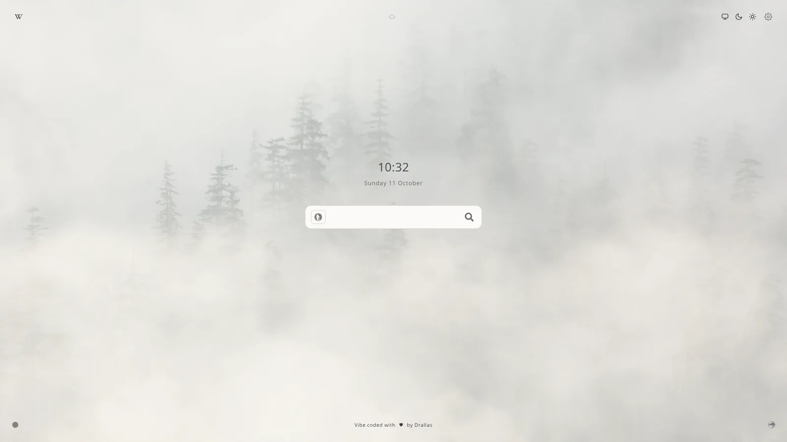
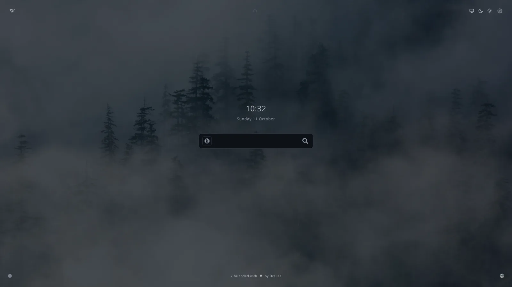
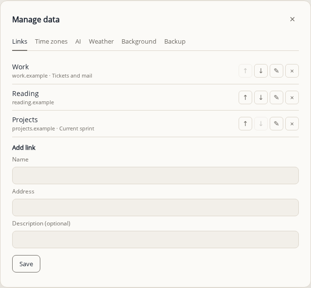

No account, no tracking, no build step
A start page that stays out of your way.
Search, a clock, and optional weather, links and AI shortcuts. Everything beyond the search is switched on by you, and nothing leaves the page unless you ask it to.




Choose your level
Quiet by default. Three pages, from bare search to every option.
You start with the one that suits you, and change it whenever you like from the gear in the top right.
Minimal
Search, the clock and the colour button. Nothing else.
Standard
Adds the date and your links. The default for a new visitor.
DefaultAdvanced
Every option, in groups, with a backup tab for your own data.
Search
Pick your search engine right in the bar.
Each click on the icon moves to the next engine: DuckDuckGo, Kagi, Brave or Google. Your choice is remembered. Under Manage data you can also add up to five AI shortcuts, or your own address.

Features
Everything you need, nothing you do not.
The page is built around a few clear choices.
Your links
Up to fifteen of your own, next to the permanent ones, in a window or a hover list.
Time zones
Up to five, sorted by UTC offset, shown behind a globe next to the date.
Weather, if you want it
Off by default. From your IP address or a city you pick, with a forecast on click.
Backgrounds
Photos, a plain page, or a soft colour. One press on the round button changes it.
Six languages
English, Dutch, German, French, Spanish and Chinese. It follows your browser.
Backup in one file
Export your settings and data to a file, and import it on another device.
Privacy
Private by design.
Your choices live in your browser. Weather sends your IP address to ipapi.co, or the city you choose to Open-Meteo, only while weather is on. Extra places send their name to Open-Meteo. Custom AI shortcuts load their icon from their own site. Nothing else leaves the page.
- No account
- No analytics
- Data stays local

Wallpapers
Wallpapers, or none at all.
A misty forest, pink dunes, mountain haze, or a plain page with a soft colour. Switch the ones you want on in Manage data.


Get started
Start in a minute.
No account, no build step, no install needed to try it.
- Open it.
Use the online version and bookmark it, or set it as your homepage.
- Choose a page.
Minimal, Standard or Advanced, from the gear in the top right, or press ?.
- Make it yours.
Add your links, a city for the weather if you want it, and your AI shortcuts under Manage data.
Keep the page quiet. Make it yours.
Free, open source and yours to change.